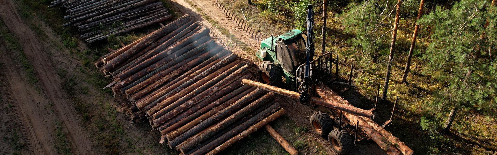

História e Compromisso Ambiental
Desde o início, a empresa adotou uma abordagem responsável e sustentável na extração, garantindo que os recursos naturais fossem utilizados de forma consciente e com o menor impacto ambiental possível. À medida que a empresa cresceu, seu compromisso com a sustentabilidade se expandiu para abranger todas as áreas de sua operação. A Noovar entende que o progresso econômico deve andar de mãos dadas com a preservação do meio ambiente e, por isso, busca constantemente maneiras de reduzir sua pegada de carbono e minimizar seu impacto no ecossistema. A história da Noovar é um exemplo inspirador de como uma empresa pode evoluir e prosperar no mercado global, começando como uma modesta empresa de extração de matéria-prima para painéis solares e se transformando em uma líder na produção e venda desses produtos. Tudo começou na Austrália, em meados dos anos 70, em uma cidade popular da época.
No coração de uma cidade australiana dinâmica e cheia de energia, surgiu a Noovar. Fundada por um grupo de visionários empreendedores, a empresa nasceu como uma empresa de extração de matéria-prima essencial para a fabricação de painéis solares. Naquela época, a energia solar estava começando a se consolidar como uma alternativa promissora e limpa aos combustíveis fósseis, e a demanda por placas solares estava crescendo rapidamente.Os fundadores da Noovar viam potencial no setor de energia solar e acreditavam que poderiam não apenas fornecer matéria-prima de alta qualidade, mas também desempenhar um papel crucial na produção e no avanço das tecnologias solares. Essa visão audaciosa impulsionou a empresa nos primeiros anos de sua existência.
Conforme a Noovar estabeleceu uma base sólida no mercado de extração de matéria-prima para placas solares, sua equipe de pesquisa e desenvolvimento começou a explorar novas possibilidades. Eles investiram em inovação e tecnologia para melhorar a eficiência e a qualidade das matérias-primas, mas também buscaram maneiras de expandir seu portfólio. A virada aconteceu quando a equipe de P&D da Noovar desenvolveu uma técnica revolucionária de revestimento solar que aumentava significativamente a eficiência das placas solares. Em vez de se contentar apenas em extrair e vender matérias-primas, a Noovar decidiu entrar no negócio de fabricação de painéis solares. Essa decisão estratégica provou ser um divisor de águas para a empresa.
Com seu compromisso com a inovação, a Noovar lançou sua primeira linha de painéis solares em meados dos anos 80. Esses painéis eram conhecidos por sua qualidade superior e eficiência, graças à tecnologia de revestimento solar patenteada. A empresa rapidamente ganhou reconhecimento no mercado australiano e, em pouco tempo, seus produtos eram exportados para vários países ao redor do mundo. À medida que a conscientização sobre a importância da energia limpa cresceu, a demanda por painéis solares Noovar aumentou exponencialmente.
Além de seu compromisso com a qualidade, a Noovar também se destacou por sua dedicação à sustentabilidade. A empresa adotou práticas ambientalmente responsáveis em todas as etapas de sua produção, desde a extração de matérias-primas até a fabricação dos painéis solares. Essa abordagem sustentável não apenas ressoou com os consumidores, mas também atraiu investidores que compartilhavam os valores da empresa.
Com a crescente demanda por seus produtos e a reputação estabelecida no mercado de energia solar, a Noovar expandiu suas operações para outros continentes. Estabeleceu centros de produção e distribuição na Europa, Ásia e América do Norte, tornando-se uma marca globalmente reconhecida no setor.
Claro, a jornada da Noovar não foi isenta de desafios. A empresa enfrentou concorrência acirrada, flutuações nos preços das matérias-primas e mudanças nas políticas energéticas em todo o mundo. No entanto, a Noovar se destacou graças à sua capacidade de adaptação e inovação contínua.
Hoje, a Noovar é uma das principais empresas do setor de energia solar, reconhecida por seus produtos de alta qualidade e compromisso com a sustentabilidade. Sua história é um exemplo inspirador de como uma empresa pode evoluir e prosperar, passando de uma empresa de extração de matéria-prima para uma líder na produção e venda de painéis solares. A Noovar não apenas forneceu energia limpa para inúmeras residências e empresas, mas também demonstrou que a inovação e a sustentabilidade são fundamentais para o sucesso no mercado de energia solar. Seu legado continua a brilhar, iluminando um futuro mais limpo e sustentável para todos
Área Cliente
Nossas Atividades
Noovar Corporation é um MSP/ISO Registrado da Elavon, Inc. Geórgia [uma subsidiária integral da U.S. Bancorp, Minneapolis, MN], com sede em São Paulo
© All right Reversed.noovar